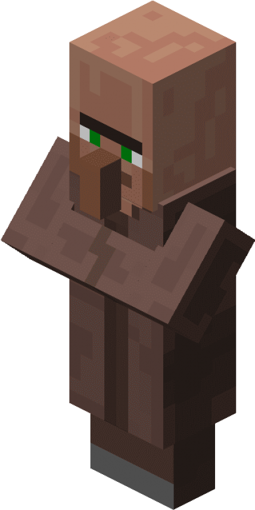
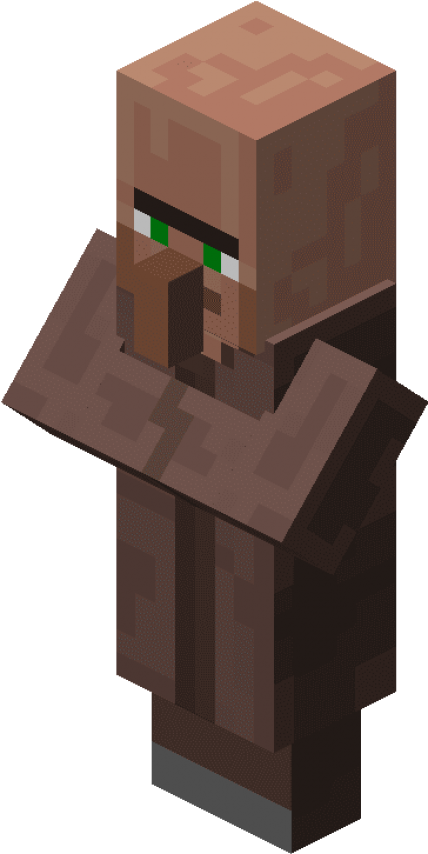
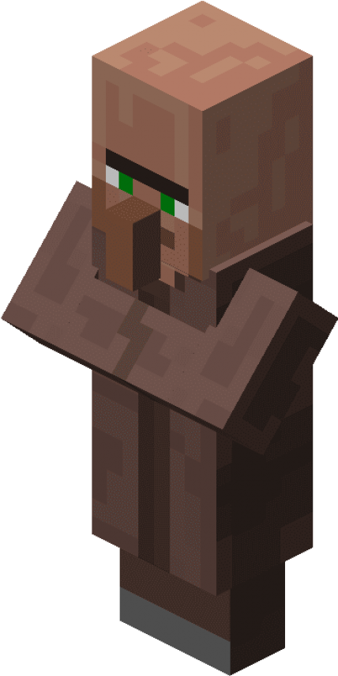
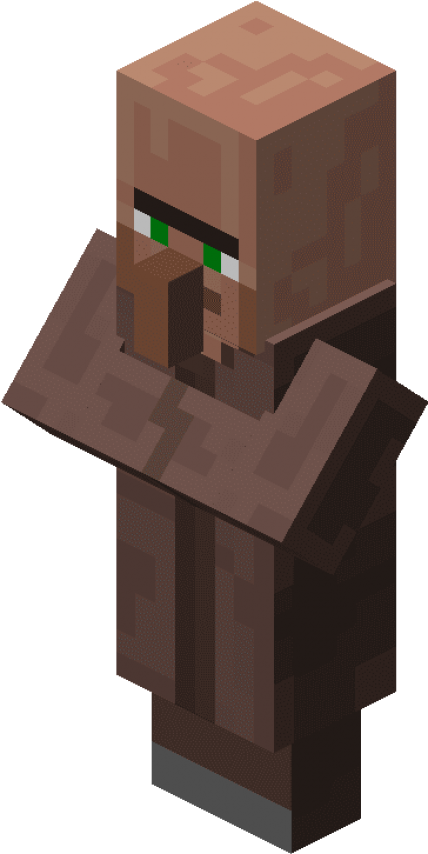

Agora que sabemos que havia uma civilização de seres humanos, tá na hora de começarmos uma linha do
tempo e explicar como tudo começou. Então nada mais justo que começarmos do começo, onde existia os seres
humanos e os villagers.
Agora que conhecemos os seres humanos, que tal falarmos um pouco sobre os villagers . . . Tá, mas por quê ? . . .
Bom, acho que qualquer jogador de Minecraft sabe que os villager são criaturas amigáveis . . . talvéz amigáveis
até demais.
Porém eles são uma das poucas raças no jogo que é possível negociar, os quais são os Villagers e os
Piglins, mas vamos falar dos Piglins mais tarde.
Os villagers são um dos poucos mobs que possui uma
gigantesca variedades entre eles, como as bruxas, os pillagers e entre outros tipos de villagers. Bem já que começamos
a falar dos villagers, por que não falarmos sobre a comunidade deles ?
Bem, é comum encontrarmos vilas espalhadas pelo mapa, acompanhadas de um iron golem para a proteção dos
moradores dela, mas uma coisa que não combina com eles . . . é o próprio Iron Golem.

Os Iron Golens ou golens de ferro, são um do mobs mais fortes do jogo e isso meio que . . .
não se encaixa com a personalidade tranquila dos villagers.
Algo importante a se lembrar é a forma que iron
golem é feito, nós jogadores conseguimos criar um golem de ferro através de blocos de ferro e uma abóbora,
mas nunca foi visto um villager criando um iron golem, eles apenas aparecem do nada e a parte mais estranha
disso é a forma que o Mobestiary descreve eles:
" Não se sabesse ao certo como os aldeões invocam
seus golens de ferro, mas, mais cedo ou mais tarde, um certamente aparecerá . . . "
Essa página é no mínimo estranha. Agora, por que teria uma página do livro que contaria não ter certeza da " origem "
do golem de ferro ? . . . Mas o mais importante, os villagers invocam, eles não constroem os seus golens.
Eu sei que você deve tá se perguntando, por que agente começou a falar dos villagers e não dos humanos ? Mas vamos
com calma, voce já vai entender o motivo. Porque através do Iron Golem será possivel ver que humanos e villager
viviam em paz, trabalhavam juntos e até tinham uma certa " aliança " entre eles.
Pelo que dá a entender, os villagers não construiram os golens de ferro e nem precisavam deles, quem realmente construiu os
golens foram os humanos, oque nos leva a pensar é que no começo de tudo, os Villagers e os Humanos viviam juntos
aparentemente, entretanto . . . Isso mostra que em algum ponto da história eles acabaram se separaram, afinal os seres humanos sumiram,
enquanto os villagers estão vivos . . .
Provavelmente os humanos acabaram ficando gananciosos depois da
criação do Iron Golem, afinal eles conseguiram criar uma vida apartir do nada e que de alguma forma os seres humanos
tiveram acesso a " magia da criação " e apartir desse ponto em específico, os seres humanos vão por um caminho sem volta . . .